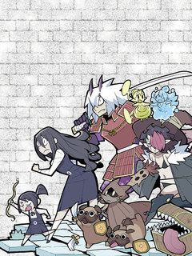

쌍갑포차 같은 웹툰 추천

쌍갑포차 · 배혜수
쌍갑포차 재밌게 봤다면 이 웹툰들도 좋아할 거예요. 같은 장르이면서 옴니버스, 눈물샘자극, 공감 같은 요소가 겹치는 작품을, 겹치는 요소가 많은 순서로 20개 골랐어요.
2026-10-02 기준 · 네이버웹툰·카카오웹툰·레진코믹스 · 성인 작품 제외
내 취향으로 직접 골라 추천받기 →-
1
 카카오웹툰
카카오웹툰닥터 최태수
대학병원의 가장 말단 의사, 걸어다니는 깡통― 인턴. 하루하루, 인턴으로서의 고된 나날을 보내던 최태수는 우연히 세계최정상의 흉부외과의사인 '리처드 카프레네'의 임종을 지키게 된다. 이때, 놀랍게도 카프레네의 모든 의학지식이 고스란히 최태수에게 전이…
눈물샘자극공감판타지드라마카카오웹툰에서 보기 → -
2
 네이버웹툰
네이버웹툰살아생전
사람이 죽으면 저승사자가 찾아와 이름을 세번 부른다. 마중 나온 저승사자 와 망자가 삼도냇가에 이르면 의령수라는 아주 큰 나무가 있는데, 그 밑에 작은 식당 '살아생전'이 있다. 망자가 생전에 가장 먹고 싶었던 음식과 그곳 으로 안내하는 저승사자 '…
눈물샘자극공감드라마네이버웹툰에서 보기 → -
3
 네이버웹툰
네이버웹툰나랑 같이살아
사랑하는 가족과 이별한 순간, 고양이 하루는 입양되기 전 어린 시절로 돌아온다. 자신을 아직 모르는 엄마 소원을 다시 만나기 위해 기억 속 집을 향해 길을 나서지만, 사람의 말도 길도 알 수 없는 작은 고양이에게 세상은 너무 넓고 험하다. 하루는 다…
눈물샘자극공감드라마네이버웹툰에서 보기 → -
4
 네이버웹툰
네이버웹툰쾌변일지
끔찍한 복통과 멈추지 않는 설사. 하루 종일 화장실로 달려가야 하는 고통의 원인을 병원에서도 명확히 찾아내지 못한다. 스물한 살, 예고도 없이 찾아와 내 몸의 주인 행세를 하는 질병. 과연 무너진 일상을 바로잡을 수 있을까? 끝을 알 수 없는 화장실…
눈물샘자극공감드라마네이버웹툰에서 보기 → -
5
 카카오웹툰
카카오웹툰무지개다리 파수꾼
돈과 성공만을 전부로 알던 유명 수의사 이한철. 그는 어느 날 사고 이후, 동물들의 목소리를 들을 수 있게 된다. 그렇게 동물 병원을 찾은 여러 동물들의 이야기를 듣던 어느 날, 길에서 만난 강아지 밍구의 살려달라는 목소리를 듣게 되는데.. 동물의…
눈물샘자극판타지드라마카카오웹툰에서 보기 → · 무지개다리 파수꾼 같은 웹툰 → -
6
 카카오웹툰
카카오웹툰저승식당
“8, 8, 8, 82억이요?!” 흙수저 인생에 갑자기 찾아온 82억의 건물!! 그리고… 식당? 식당에 찾아오는 손님들의 행색은 수상하기 짝이 없고 알 수 없는 말만 하는데……. 서울 한복판에서 벌어지는 등골 서늘한 감동 스토리. 매일 밤 열한 시부…
옴니버스드라마카카오웹툰에서 보기 → · 저승식당 같은 웹툰 → -
7
 카카오웹툰
카카오웹툰0살부터 슈퍼스타
엘프, 요정, 슬라임, 선물상자, 마왕 등 수천 번의 환생에 이어 몇 번째인지도 모를 새로운 삶. 인간 아기로 태어난 나 이서준! 내가 살아온 기억들이 동화처럼 남아 있는 생의 도서관 속에서 가장 간절히 원했던 꿈이 있는 전생을 보게 된다. 거기다…
눈물샘자극판타지드라마카카오웹툰에서 보기 → · 0살부터 슈퍼스타 같은 웹툰 → -
8
 카카오웹툰
카카오웹툰인생이 레몬을 건네면 위스키를 더하라
하루의 끝, 작은 바에서 위스키 한 잔을 마시는 시간. 바텐더가 건네는 한 잔의 위스키를 사이에 두고 서로의 사연이 조용히 오간다. 누군가는 위로를 건네고, 누군가는 말없이 잔을 기울이며 혼자 눈물짓기도 한다. 인생은 때때로 레몬처럼 시리고 아린 맛…
옴니버스드라마카카오웹툰에서 보기 → -
9
 네이버웹툰
네이버웹툰고대동물기
모든 생명은 무엇을 위해 살아가고, 무엇을 위해 죽어갈까? 세상으로부터 버려진 채 늙어 죽어가는 티라노사우루스 한 마리. 그런 그에게 죽기 전에 이뤄야 할 꿈이 생겼다. 이 땅에 살고, 이 땅에 죽어간 생명들의 기묘하고도 특별한 이야기
옴니버스드라마네이버웹툰에서 보기 → -
10
 카카오웹툰
카카오웹툰기적의 물리치료사
물리치료사 이기적. 센터는 망하고, 여자친구에게는 차이고...! 되는 것 하나 없는 날, 떨어지는 별을 맞고 나서 상태창이 보이기 시작했다?! 최고의 물리치료사로 성장하는 이기적의 이야기!
눈물샘자극판타지드라마카카오웹툰에서 보기 → -
11

-
12
 카카오웹툰
카카오웹툰공작님, 회개해주세요!
[금쪽같은 최종보스의 보좌관이 되었다!] 소설 속 최종보스의 보좌관이 되었다. 최종보스는 결국 죽게 되지만, 세상은 최종보스의 손에 개판이 된다. 그렇다면, 애초에 최종보스가 엇나가지 않으면 되잖아? 위태위태한 예비 최종보스를 고쳐 보자.
눈물샘자극판타지드라마카카오웹툰에서 보기 → -
13

-
14
 카카오웹툰
카카오웹툰아역부터 월드스타!
악마적인 재능으로 연기하는 소년. 바이올린에 미쳐 살았던 남자. 불완전했던 두 영혼이 하나가 되었다. 병원을 나온 천재 소년, 이도현의 월드스타 성장기!
눈물샘자극판타지드라마카카오웹툰에서 보기 → -
15
 네이버웹툰
네이버웹툰월스트리트 천재의 시한부 투자법
월스트리트에서 수천억 원의 자산을 일군 천재 투자자 ‘하시헌’ 하지만 돈으로도 치료할 수 없는 희귀병에 걸려 죽음을 맞이하던 순간, 10년 전 월스트리트 신입사원 시절로 회귀한다. 자신의 병을 치료할 신약을 개발하려면 천문학적인 돈이 필요하다는 사실…
공감판타지드라마네이버웹툰에서 보기 → -
16
 카카오웹툰
카카오웹툰덕혜옹주를 도와줘
여고생 현민, 100년 전 귀족 여학교로 떨어졌다. 정치 싸움과 노골적 차별이 난무하는 그곳에서 그녀의 임무는 단 하나, 한 소녀의 존엄과 마음을 지켜내는 것!
눈물샘자극판타지드라마카카오웹툰에서 보기 → -
17
 카카오웹툰
카카오웹툰월요일이 사라졌다
모든 직장인이 그렇듯, 월요일을 무지하게 싫어하는 진 한. 일요일 밤 자고 난 뒤 출근했는데, 월요일이 아닌 화요일이었다 통째로 사라진 월요일의 기억. 그런데 제대로 사고를 쳤다. 직장내 최고 퀸카 여사원에게 공개적으로 고백을 해 버린 것! 그리고…
공감판타지드라마카카오웹툰에서 보기 → -
18

레진코믹스모험가를 반드시 죽이는 던전
유일무이한 통쾌 이세계 아르바이트 테러 판타지, 개막!! 던전 관리 직원으로 전생한 아이네와 나하트는 오늘도 청소와 클레임 대응에 여념이 없는데…? ‘망할 모험가 놈들, 아주 난장판을 만들어 놓고 갔네.’ 건방진 모험가들에게 던전이 이빨을 드러낸다!…
옴니버스판타지레진코믹스에서 보기 → -
19
 카카오웹툰
카카오웹툰SSS급 죽어야 사는 헌터
F급 말단 헌터 ‘김공자‘. 랭킹 1위 ‘염제‘를 부러워하던 어느 날, 무려 S+급 스킬을 얻는다. 하지만 기쁨도 잠시, 어째 스킬 내용이 이상하다?! 상대의 스킬 중 1개를 복사한다,까지는 좋은데… "뭐? 내가 죽어야만 발동된다고?!" 죽어야 사는…
눈물샘자극판타지카카오웹툰에서 보기 → · SSS급 죽어야 사는 헌터 같은 웹툰 → -
20
 네이버웹툰
네이버웹툰1초
구조율 100%의 전설적인 소방관. 그의 특별한 능력은 긴장하는 순간, 미래가 보인다는 것! 촌각을 다투는 진짜 소방관들의 이야기
눈물샘자극드라마네이버웹툰에서 보기 → · 1초 같은 웹툰 →